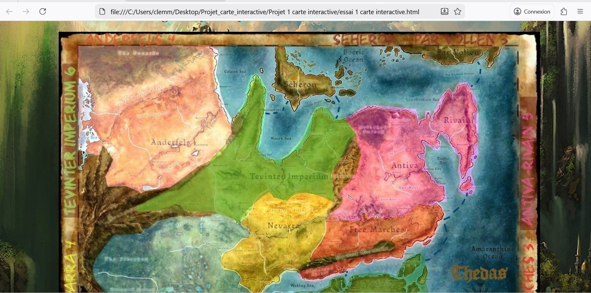
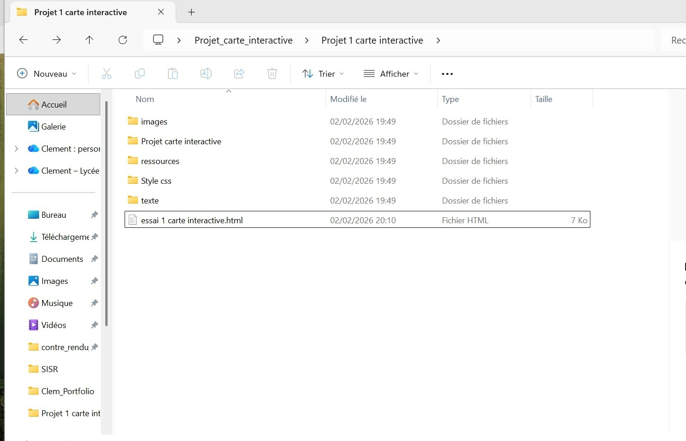
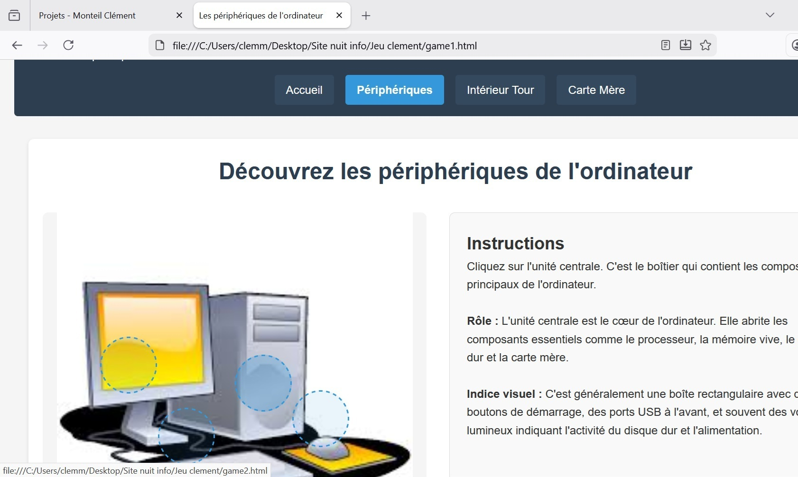
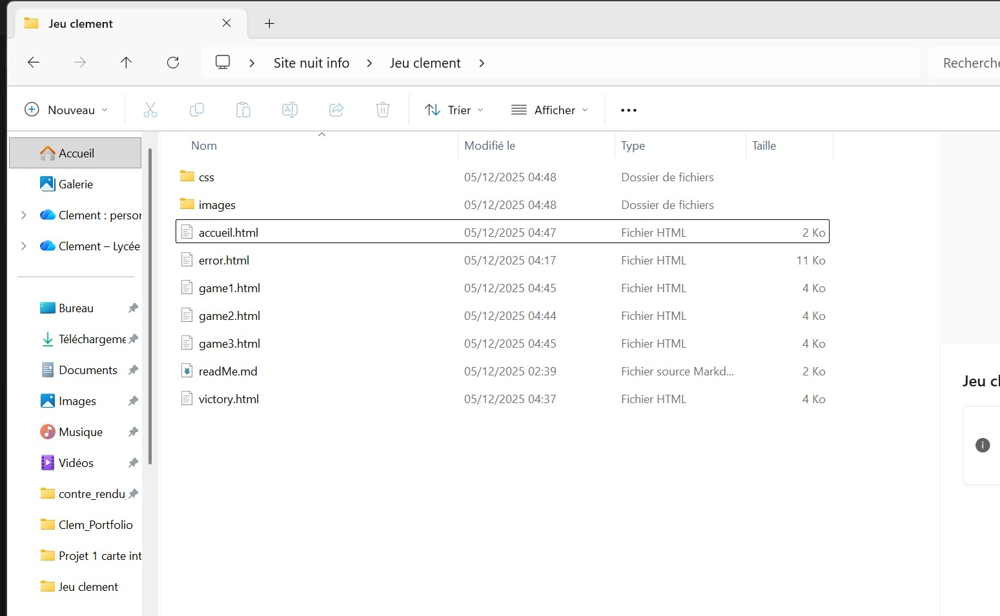

Pacman en Python
-
Contexte/Objectifs :
Dans le cadre d'un exercice lors de ma formation, j'ai moi-même fait un petit jeu de Pacman dont je suis assez fier ! Ce programme a beaucoup de défauts. Il n'est absolument pas fiable car très consommateur de ressources, il est très peu optimisé. Mais il est fait presque de A à Z (il y a juste eu un peu d'aide de l'IA pour l'utlisation de la bibliothèque graphique, que je ne maîtrisais pas). -
Travail réalisé :
Un petit jeu, avec un seul niveau. -
Technologies utilisées :
Du Python, et beaucoup de mathématique, notamment un système de matrice. -
Compétences utilisées :
Recherche, cours, motivation. -
Résultat/Bilan :
Ce travail à été surtout intéressant pour réviser les matrices, de plus la manipulation du langage Python est très importante pour bien apprendre la programmation de manière générale.
Capture d'écran du jeu

Programme Python (pas optimisé)

PS : Le programme est débutant, il n'est pas optimisé et peut consommer beaucoup de RAM.
Installation de serveur ( Proxmox )
-
Contexte/Objectifs :
Dans le cadre d'un projet de second semestre en première année, nous avons monté un serveur, et géré son hyperviseur Proxmox. Ainsi qu'un NAS. Nous avons aussi organisé le travail de groupe, avec des plannings, et créé une documentation technique importante.
PS : Un grand bravo spécial à Tristan et Killian qui ont globalement pris en main le projet pour le rendre bien plus professionnel, spécialement dans sa mise en page.
-
Travail réalisé :
Création d'une documentation, réalisation du cahier des charges : mise ne place du serveur de manière physique (câblage, etc...), mise en place du serveur (prise en main, supervision, etc...). -
Technologies utilisées :
Beaucoup de recherche. Trello, et matériel réseau (câble, serveur, switch, et NAS). -
Compétences acquises :
Proxmox, Gestion de NAS, Organisation (gestion de logiciels qui vont avec). -
Résultat/Bilan :
Le travail à été surtout intéressant pour le travail de groupe. C'est vrai que j'ai été absent pour la dernière partie NAS du projet, mais je remercie encore mes camarades pour m'avoir bien tout expliqué. Trouver des techniques et écrire des lignes de code pour faire ce projet était vraiment un défi, mais le résultat était satisfaisant. J'ai beaucoup appris la mentalité d'un informaticien : galèrer pendant des heures et des heures, pour avoir la très grande satisfaction de trouver, et de faire fonctionner ce que l'on veut !
Compte rendu
ReadMe
Carte interactive
-
Contexte/Objectifs :
Ce projet me tient à coeur, mais il a été difficile, c'était ma toute première année et mon premier projet. Je l'ai re-travaillé, récemment avec l'IA Windsurf pour appronfondir le site. -
Travail réalisé :
Le dossier contenant le site, les htmls, les CSSs, et/ou autres dossier/fichier. Manipulation des svg (réalisée sur un site externe via internet). -
Technologies utilisées :
Un peu d'IA (Windsurf) pour m'aider à la mise en page, associée à W3schools ou autres sites pour chercher une mise en page précise. Et puis d'autres sites pour les recherchers d'informations sur l'univers et le lore. -
Compétences utilisées :
Recherche, motivation, rigeur. -
Résultat/Bilan :
Le travail à été surtout intéressant pour manipuler des svg et trouver des techniques pour faire une carte interractive : superposer des images.
Tout ça, sans utiliser l'IA dans premier temps, puis dans un second temps, son utilisation pour la mise en page appronfondie (style des cadres explicatifs des régions, mise en place de pop-up, d'autres choses...).
Capture d'écran du site, avec les svg
Parcours du fichier
Site format .zip
PS : Le format .zip est le projet original, clairement pas fini, mais sans IA.
Projet de deuxième année : déploiement d'une infrastructure informatique de l'entreprise.
-
Contexte/Objectifs :
Pour ce projet de deuxième année, nous avons exploré de manière approfondie le fonctionnement et la gestion d'un parc informatique en entreprise, dans un cadre pédagogique et pratique. Cette immersion nous a permis de comprendre les enjeux techniques et organisationnels liés à l'administration des infrastructures informatiques, incluant la gestion des équipements, des réseaux et des services associés. À travers des mises en situation concrètes, nous avons acquis des compétences essentielles en maintenance, déploiement et sécurisation des systèmes, nous préparant ainsi aux défis réels du monde professionnel. -
Travail réalisé :
Tous les documents, le serveur, l'AD, le Zabix, la configuration switch/routeur et les règles de pare-feu. -
Technologies utilisées :
Hyper-V, Active Directory, Zabbix, Linux (distribution : Debian12), cisco (routeur&switch), VLAN. Et mise en place des règles de Pare-feu. -
Compétences utilisées :
Discipline, organisation, recherche, motivation. -
Résultat/Bilan :
Le résultat est très intéressant, j'aurais voulu un peu plus de temps, mais avoir accès à un tel matériel est vraiment enrichissant.
Nuit de l'info : Création d'un site
-
Contexte/Objectifs :
Dans ce projet de deuxième année, nous avons participé à l'évènement de la Nuit de l'info. Dans ce contexte, nous avons réalisé un site internet en une nuit, avec une thématique "Lutter contre les bigs techs". Nous avons été mis par groupe, ce qui a été très intéressant pour réaliser un travail d'équipe (comme on ne se connaissait pas tellement).
Cette nuit était très sympa. La thématique abordée m'a appris beaucoup d'informations sur les logiciels libres, linux, et les alternatives multiples de nos logiciels utilisés au quotidien.PS : Nous avons eu un grand problème de mise en ligne, suite à l'intégration du travail de chacun dans un même site.
-
Travail réalisé :
Mon site internet : petit jeu avec des boutons transparents sur des images pour selectionner différents composants informatiques adaptés à une question. -
Technologies utilisées :
J'ai utilisé du HTML, CSS, et un peu d'IA (surtout pour la mise en page CSS, même si je revérifiais à chaque fois ce qu'elle faisait pour bien comprendre, et surtout pouvoir changer ce que je voulais, comme je le voulais). Elle connait beaucoup de fonctions, c'est très rapide pour créer quelque chose de plus agréable à regarder.
Pour le reste de la mise en ligne, ce sont les autres qui on réalisé cette partie du projet. -
Compétences utilisées :
Cours, recherche, supervision de l'IA, sociabilité, motivation. -
Résultat/Bilan :
Ce projet était extrêmement intéressant pour la stimulation de travail. Avoir un temps donné change vraiment tout. De plus le sujet donnait à réfléchir et à amener par la suite de longues conversations.
J'ai appris beaucoup de choses. Expérience très enrichissante.
Capture d'écran du site, avec les svg
Parcours du fichier
Site format .zip
PS : À gauche, c'est mon jeu, à droite c'est le site total qui ne fonctionne pas, avec les jeux des autres membres.
Appel d'offre : Création d'un site
-
Contexte/Objectifs :
Nous avions un cahier des charges avec des demandes très précises, nous avons alors dû rechercher sur internet tout les composants informatiques, recherche et choisir ceux qui pourraient répondre aux besoins, puis faire un document détaillé avec les références de tout les matériels choisis, avec un petite justification. Enfin un powerpoint pour présenter tout ce travail. Je n'ai plus le document rendu de ce travail (mais j'ai encore l'exposé), mais pour ma part j'ai fait un site internet pour présenter ces recherches de manière originale. -
Travail réalisé :
Le cahier des charges nous demandait un document synthèse de nos recherches, avec une présentation précise. Puis un exposé pour présenter ce travail. Le site est une initiative personnelle supplémentaire, pour accompagner ce document.
Pour ce site je n'ai utilisé AUCUNE IA, c'est vraiment du fait main de A à Z. -
Technologies utilisées :
J'ai utilisé les classiques : HTML, CSS, W3shools pour ce projet. Et sans IA !. -
Compétences utilisées :
Des cours, de la patience, des recherches, et bien sûr j'ai respecté les contraintes. -
Résultat/Bilan :
Dans ce projet, nous avons fait beaucoup de recherches sur les différents composants informatiques. C'était un projet très intéressant qui m'a beaucoup appris. J'ai pour ma part énormément travaillé sur un site pour montrer le travail de nos recherches, mais je n'ai plus le document final de l'appel d'offres. Il y a aussi eu une présentation orale qui a été plutôt bien reçue (j'ai les documents). Cette immersion nous a permis de comprendre les enjeux techniques et les contraintes du cahier des charges.